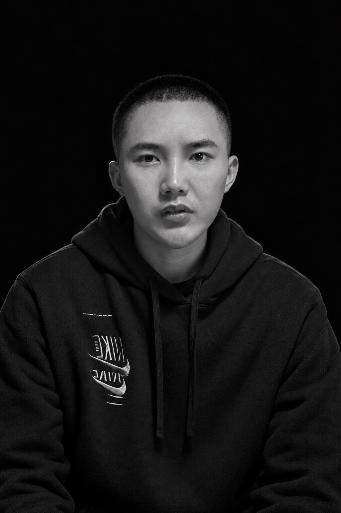
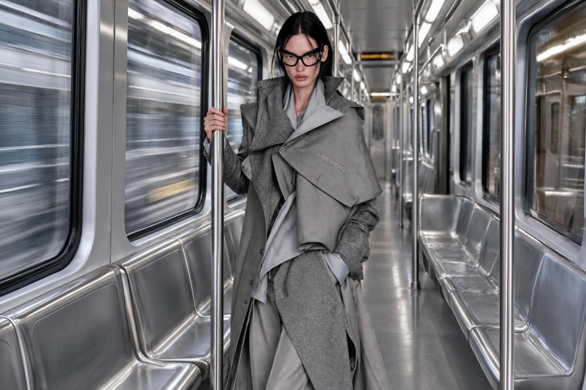
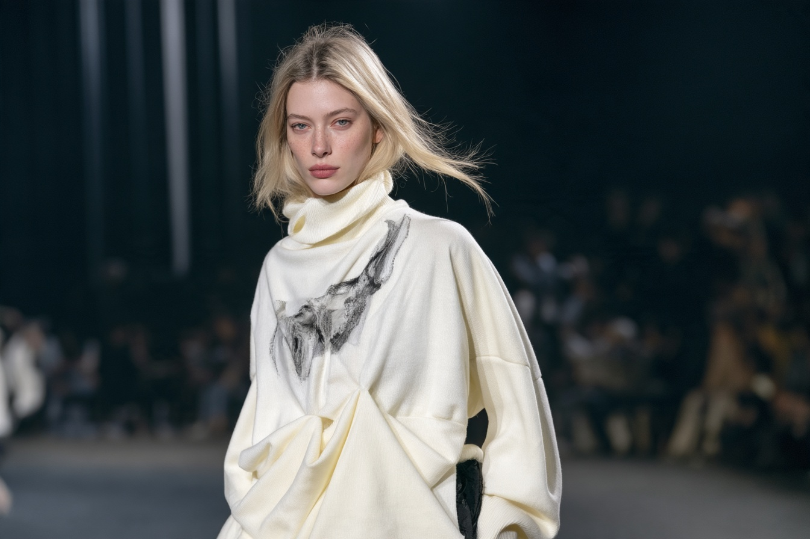
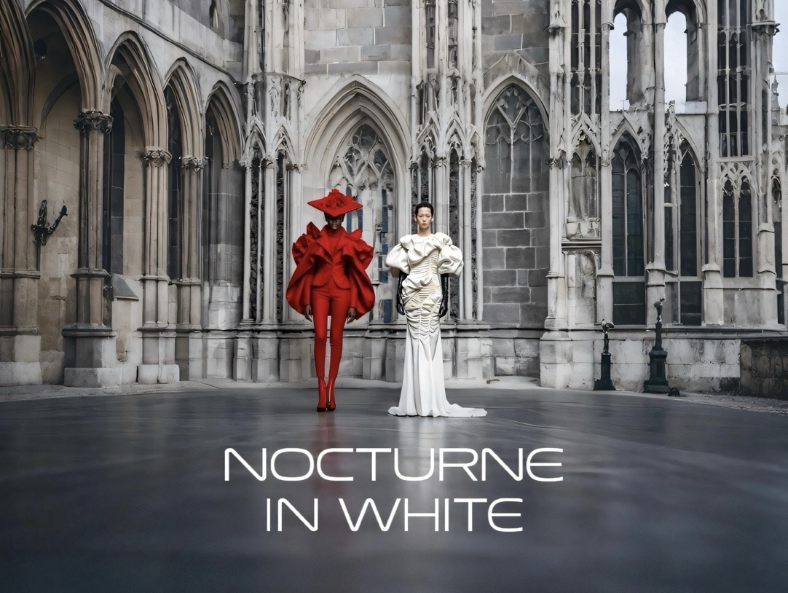
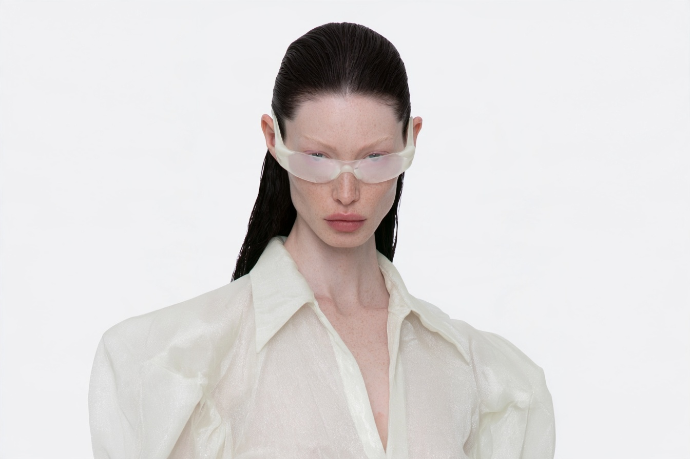
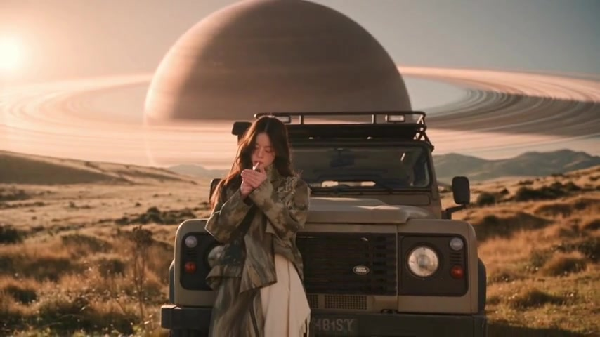
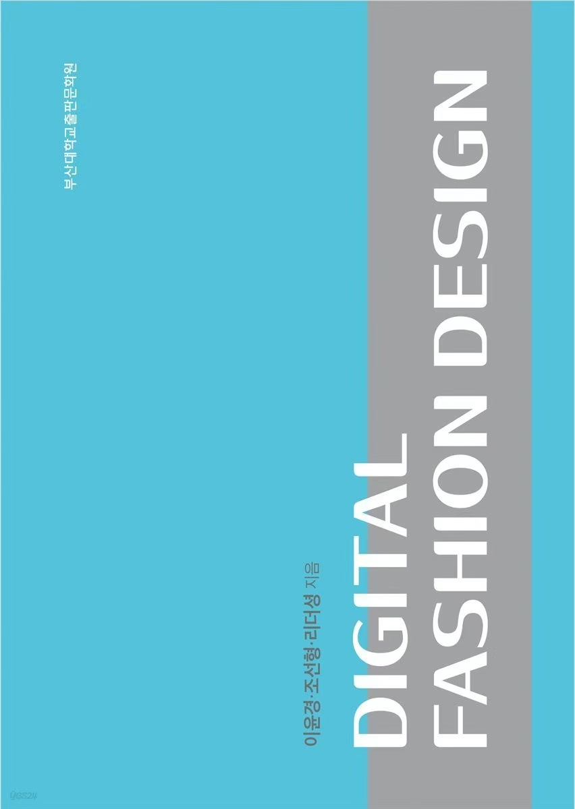
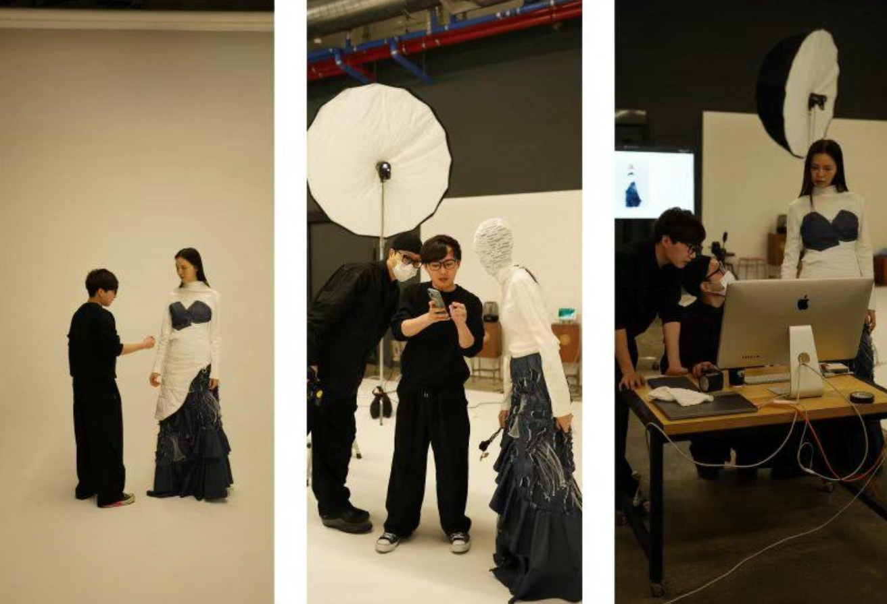
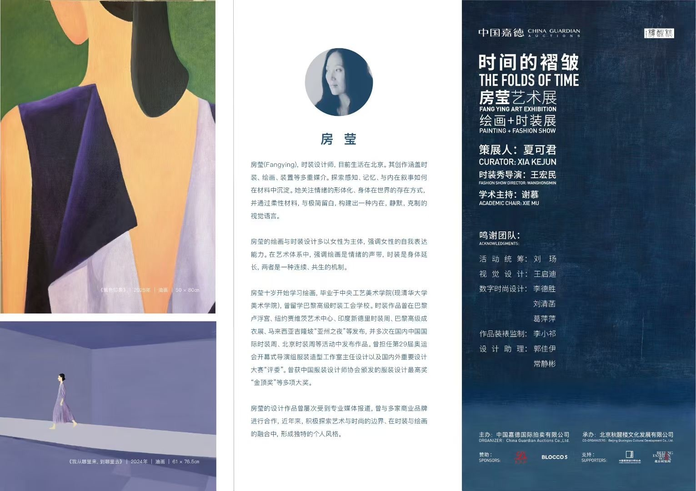

FASHION DESIGN / DIGITAL PRACTICE

李德胜LI DESHENG
时装设计师 · 数字艺术创作者
从服装出发，探索形态、影像与新技术。Fashion Designer · Digital Artist
韩国釜山大学助理讲师
广州暖树时装设计有限公司创意总监
美图 KOOZEE 官方合作讲师Assistant Lecturer, Pusan National University, South Korea
Creative Director, Guangzhou Nuanshu Fashion Design Co., Ltd.
Official Partner Instructor, Meitu KOOZEE
广州 · 釜山 / GUANGZHOU · BUSAN
DESIGN / IMAGE / TECHNOLOGY 2026
SELECTED PRACTICE / 创作目录
选择一个类别，进入作品作品与实践

01服装设计FASHION DESIGN
30 WORKS
02实物作品 · 秀场PHYSICAL FASHION / RUNWAY
7 LOOKS
03中国时装周数字艺术板块CHINA FASHION WEEK / DIGITAL ART
18 WORKS
04AI人物AI PORTRAITS
17 WORKS
05AI视频&商业合作AI FILMS & COMMERCIAL COLLABORATIONS
10 FILMS
06设计与研究DESIGN & RESEARCH
PROFILE / PUBLICATIONS
07获奖与媒体报道AWARDS & PRESS
AWARDS / EDITORIAL
08艺术展览ART EXHIBITIONS
ART / COLLABORATIONS服装设计FASHION DESIGN
30 WORKS黑白垂坠 · 长裙造型Black & White Draping · Long Dress
02灰色条纹 · 解构男装 IGrey Pinstripes · Deconstructed Menswear I
03灰色条纹 · 解构男装 IIGrey Pinstripes · Deconstructed Menswear II
04黑白拼接 · 层叠造型Black & White Panels · Layered Look
05青瓷渡岁 · 系列设计Celadon Across the Years · Collection
06羽化 · 系列设计Metamorphosis · Collection
07羽化 · 造型细节Metamorphosis · Styling Details
08万象和鸣 · 系列设计Resonance of All Things · Collection
09黑白山水 · 系列设计Monochrome Landscapes · Collection
10干涉场 · 系列设计Field of Interference · Collection
11共栖 · 系列设计Symbiosis · Collection
12AFTERBEING · 系列设计AFTERBEING · Collection
13欣欣向荣 · 系列设计Flourishing · Collection
14云锋叠境 · 系列设计Layered Cloudscapes · Collection
15虚空生形VOID BREEDS FORM
16服装结构与细节研究Garment Structure & Detail Study
17层叠服装系列Layered Garment Collection
18玄素 · 系列设计Black & White · Collection
19MORPHOLOGY · 形态研究MORPHOLOGY · Form Study
20几何廓形研究 IGeometric Silhouette Study I
21不对称廓形 · 长款造型Asymmetric Silhouette · Long Look
22不对称廓形 · 高帽造型Asymmetric Silhouette · Tall Hat Look
23不对称廓形 · 黑白拼接Asymmetric Silhouette · Black & White Panels
24建筑感女装廓形Architectural Womenswear Silhouette
25银灰解构 · 层叠造型Silver Grey Deconstruction · Layered Look
26银灰解构 · 地铁影像Silver Grey Deconstruction · Metro Editorial
27银灰解构 · 流动视线Silver Grey Deconstruction · Moving Perspectives
28银灰解构 · 镜面旷野Silver Grey Deconstruction · Chrome Landscape
29银灰解构 · 材质特写Silver Grey Deconstruction · Material Close-up
30实物作品 · 秀场PHYSICAL FASHION / RUNWAY
7 LOOKS / 2025从设计构想到实物服装，记录作品在秀场中的结构、材质与动态。Physical garments on the runway: structure, material and movement.
PH VALUE 2025
秀场造型 01Runway Look 01
2025秀场造型 02Runway Look 02
2025秀场造型 03Runway Look 03
2025秀场造型 04Runway Look 04
2025柯桥时尚周 2025 / KEQIAO FASHION WEEK
秀场造型 01Runway Look 01
2025秀场造型 02Runway Look 02
2025秀场造型 03Runway Look 03
2025中国时装周数字艺术板块CHINA FASHION WEEK / DIGITAL ART
18 WORKS白昼与夜色 · 建筑空间Day & Night · Architectural Space
28白昼与夜色 · 红色造型Day & Night · Red Look
29白昼与夜色 · 暗场Day & Night · Dark Scene
30白昼与夜色 · 群像Day & Night · Ensemble
31白昼与夜色 · 影像变体Day & Night · Visual Variation
32数字服装 · 荒原Digital Fashion · Wilderness
33数字服装 · 森林Digital Fashion · Forest
34数字服装 · 深海Digital Fashion · Deep Sea
35深蓝海洋 · 概念视觉Deep Blue Ocean · Concept Visual
36数字服装 · 生物形态Digital Fashion · Biological Forms
37数字服装 · 林间光影Digital Fashion · Forest Light
38海洋与虚拟感知Ocean & Virtual Perception
39云海与超现实植物Cloudscapes & Surreal Plants
40屏幕中的目光Gaze Through a Screen
41美妆概念视觉 IBeauty Concept Visual I
42美妆概念视觉 IIBeauty Concept Visual II
43美妆概念视觉 IIIBeauty Concept Visual III
44美妆概念视觉 IVBeauty Concept Visual IV
45AI人物AI PORTRAITS
17 WORKS人物研究 · 自然雀斑Portrait Study · Natural Freckles
46人物研究 · 银发墨镜Portrait Study · Silver Hair & Sunglasses
47人物研究 · 透明镜片Portrait Study · Clear Lenses
48人物研究 · 自然肌理Portrait Study · Natural Skin Texture
49人物研究 · 侧面光影Portrait Study · Side Lighting
50人物研究 · 黑色肖像Portrait Study · Black Look
51人物研究 · 模特卡Portrait Study · Model Card
52黑白人物肖像Black & White Portrait
53自然光人物研究 INatural Light Portrait Study I
54自然光人物研究 IINatural Light Portrait Study II
55自然光人物研究 IIINatural Light Portrait Study III
56人物研究 · 冷调肌理Portrait Study · Cool Tones
57针织造型人物研究 IKnitwear Portrait Study I
58针织造型人物研究 IIKnitwear Portrait Study II
59户外人物 · 黑色外套Outdoor Portrait · Black Coat
60户外人物 · 白色造型Outdoor Portrait · White Look
61户外人物 · 粉色造型Outdoor Portrait · Pink Look
62AI视频&商业合作AI FILMS & COMMERCIAL COLLABORATIONS
10 FILMS荒原叙事 · 概念短片Wilderness Narrative · Concept Film
FILM 01暗场人物 · 叙事影像Figures in the Dark · Narrative Film
FILM 02深海共生 · 数字时装Deep Sea Symbiosis · Digital Fashion
FILM 03生物形态 · 时尚影像Biological Forms · Fashion Film
FILM 04展柜中的时装Fashion in a Display Case
FILM 05釜山大学服装学科宣传片项目制作Promotional Film Production for the Department of Clothing and Textiles, Pusan National University
FILM 06时装秀场 · 动态呈现Runway · Moving Image
FILM 07建筑空间 · 服装影像Architectural Space · Fashion Film
FILM 08羽翼形态 · 时尚短片Wing Forms · Fashion Film
FILM 09银灰解构 · 未来时尚短片Silver Grey Deconstruction · Future Fashion Film
FILM 10个人档案 / PROFILE & PRACTICE
设计与研究DESIGN & RESEARCH
独立设计师
数字时尚创作者
AI–3D 服装设计教研者Independent Designer
Digital Fashion Creator
AI–3D Fashion Design Educator & Researcher
以设计实践为核心，持续开展系列服装创作、数字时尚实验与教学研究。通过服装结构、材料和影像的交织，探索实体与虚拟之间的表达。My practice spans fashion collections, digital fashion experimentation, teaching and research. By interweaving garment structures, materials and moving images, I explore expression across physical and virtual worlds.
创作与教学 / PRACTICE & TEACHING
广州暖树时装设计有限公司
AI 服装设计 · 视觉创作
课程教学 · 设计赛事辅导Guangzhou Nuanshu Fashion Design Co., Ltd.
AI Fashion Design · Visual Creation
Teaching · Design Competition Mentoring
创作工具 / TOOLS
CLO3D / Nomad
Photoshop / Illustrator
Midjourney / ChatGPT
荣誉与发布 / HONORS & PRESENTATIONS
2023 第2届 AM Company 环保时装设计大赛 · 大奖（대상） ↗
韩国釜山 AI 设计挑战赛冠军
京津冀百强新锐设计师
汉帛奖、虎门杯、常熟杯、釜山国际设计大奖等二十余项荣誉
中国国际时装周数字时尚单元《锐·深海纪元》Grand Prize, 2nd AM Company Eco-friendly Fashion Design Competition, South Korea, 2023
Winner, Busan AI Design Challenge, South Korea
Top 100 Emerging Designers, Beijing–Tianjin–Hebei
Over 20 honors, including the Hempel Award, Humen Cup, Changshu Cup and Busan International Design Awards
China Fashion Week, Digital Fashion Section: Edge · Deep Sea Era
研究论文SELECTED RESEARCH
2024—20252024 / 可持续时尚 · 升级再造
Could Punk Style be the New Solution for Up-Cycling Fashion?
Li, D., & Lee, Y. K. (2024). International Journal of Costume and Fashion, 24(2), 13–26.
探索朋克风格与升级再造设计的结合，并运用 CLO 3D 进行设计调整与原型开发。Exploring punk style and upcycling through design development and CLO 3D prototyping.
阅读论文 / DOI ↗2025 / 设计教育 · 升级再造
A Qualitative Comparison of Upcycling and Conventional Design Development in a Fashion Design Studio Class
Li, D., & Lee, Y. K. (2025). 한국의류학회지 / Journal of the Korean Society of Clothing and Textiles, 49(5), 1061–1079.
服装设计工作室课程中，升级再造与常规设计开发的定性比较研究。A qualitative comparison of upcycling and conventional design development in studio teaching.
阅读论文 / DOI ↗PUBLICATION / 合著出版物
《数字时尚》DIGITAL FASHION DESIGN
合著作者：이윤경 · 조선향 · 리더셩（李德胜）
出版社：부산대학교출판문화원（釜山大学出版文化院）
封面与扉页展示Co-authored publication · Cover and title page
Publisher: Pusan National University Press
获奖与媒体报道AWARDS & PRESS
SELECTED AWARDS & MEDIA中国时装周CHINA FASHION WEEK媒体报道 / PRESS FEATURE
中国时装周 · 李德胜个人报道China Fashion Week · Feature on Li Desheng
中国时装周对李德胜的个人报道，点击查看微博原文。A personal feature on Li Desheng by China Fashion Week. Follow the link to read the original Weibo post.
阅读报道原文 / READ ORIGINAL FEATURE
第2届 AM Company
环保时装设计大赛
The 2nd AM Company Eco-friendly Fashion Design Competition
釜山大学李德胜团队获得大奖（대상）。作品从西藏传统服饰文化中汲取灵感，探索可持续时装设计。Li Desheng’s team at Pusan National University received the Grand Prize. The collection draws inspiration from traditional Tibetan dress culture to explore sustainable fashion design.
获奖团队 / AWARDED TEAM
부산대학교 · 리더셩 / 위샤오첸
에이엠컴퍼니, ‘제2회 친환경 패션 공모전’ 성료
韩国媒体报道比赛及获奖结果，记载釜山大学李德胜团队获得大奖。The report records the competition results and the Grand Prize awarded to Li Desheng’s team.
阅读新闻原文 / READ ARTICLE
获奖作品 Lookbook 拍摄现场Official Awarded Collection Lookbook · Behind the Scenes
第2届比赛与颁奖现场The 2nd AM Company Competition · Event & Awards
艺术展览ART EXHIBITIONS / COLLABORATIONS
BEIJING / 嘉德艺术中心
时间的褶皱 · 房莹艺术展The Folds of Time · Fang Ying Art Exhibition
与中国服装设计“金顶奖”获得者房莹合作，参与北京嘉德艺术中心的艺术展览。
参与身份：数字时尚设计
数字时尚设计团队：李德胜 · 刘清远 · 葛萍萍
Contribution: Digital Fashion Design
Team: Li Desheng · Liu Qingyuan · Ge Pingping
创作与合作CONTACT / COLLABORATION
课程教学 · 时尚影像 · 数字时装 · 品牌视觉Teaching · Fashion Imagery · Digital Fashion · Brand Visuals
lidesheng—lab